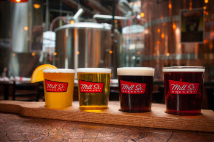
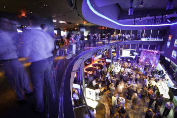

Localizado na Carlton Street, o Irv oferece várias opções de cervejas, vinhos, coquetéis, além de pratos super saborosos.

Em um ambiente super agradável, localizado no Distillery District, o que chama atenção no Mill Street Brew Pub é a sua cerveja artesanal. Com o logo ‘Great beer lives here’, o bar produz sua própria cerveja, além de oferecer 60 sabores diferentes.
O Real Sports Bar and Grill é um pub super bacana, com vários telões espalhados pelo ambiente onde é possível assistir aos jogos.
Localizado na Carlton Street, o Irv oferece várias opções de cervejas, vinhos, coquetéis, além de pratos super saborosos.